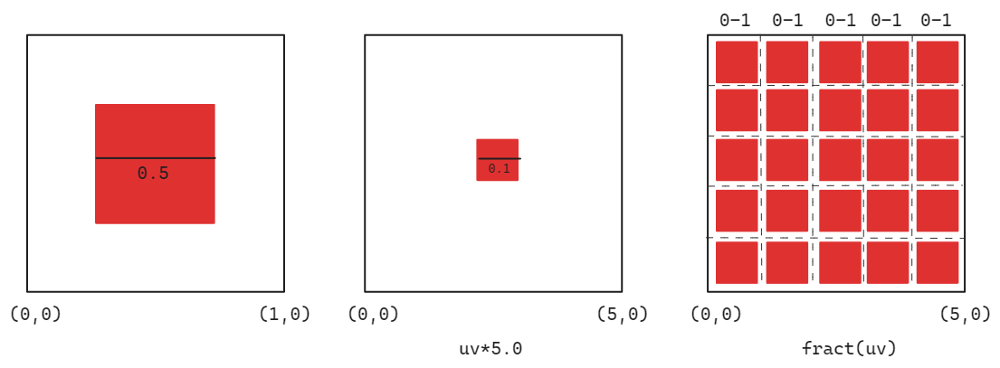
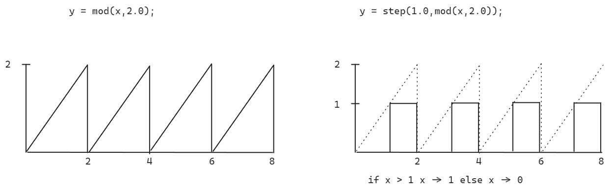

Pattern
Tiling
When we scale a coordinate system by a value > 1.0, e.g. 3.0, the value range of the canvas gets scaled from 0.0-1.0 to 0.0-3.0.
To create a tiling effect we first want to scale up our canvas and then return the same values for every decimal value between 0.0 and 0.-x.0.
As we have seen before with the fract function we always can return the same decimal value

Because the function for our shape expects values from 0.0-1.0 and we create multiple times values between 0.-1. the shape gets drawn multiple times on the canvas because the values for 0-1 are multiple times true for the shape function.
//By multiplying a pixel position with the amount of tiles and then returning just the `fract()` part of it we get 4 times 0-1 values.
float tileCount = 4.0;
uv = fract(uv*tilecount);
float sh = shape(uv)
Applying Matrices inside of Patterns and Tiles
To apply the transformations on the elements in the tile we first can type the canvas and the simply apply the transformations
Displaced Tiles
If you want different behavior in different columns and rows of your grid we have to find out if the
current pixel lies in an even or uneven column/row number.

For that we can use y=mod(x,2.0) and see if the result of it is smaller than 1.0;
To define which value we gonna return if the value is bigger we can use a ternary operator
y = mod(x,2.0)< 1.0 ? 0.0 : 1.0;
"If number <1.0 then return 0.0 else 1.0"
In GLSL it is more performant when we use a step()function for that.
y = step(1.0,mod(x,2.0));
For even column/row numbers this function returns 0 and for uneven it returns 1.0. We can use these values to multiply them with a displacement value.
//multiply uvs with scaling value
uv *= 4.0
//displace pixels which are on uneven rows
uv.x+= step(1.0,mod(st.y,2.0))*0.5;
float brickTile(vec2 _uv, float num){
_st*=num;
_st.x += step(1.0,mod(st.y,2.0))*0.5;
return fract(_st);
}
We can create the same effect of mod() with a fract() function.
or we can move them left or right depending on the row.
float myTime = u_time*speed;
if(fract(myTime)> 0.5)//If half of the time is passed
{
if(fract(_st.y*0.5)>0.5){//Check if even or uneven row
_st.x += fract(time)*2.0;
}else {
_st.x -= fract(time)*2.0;
}
} else {
if(fract(_st.x*0.5)>0.5){
_st.y += fract(time)*2.0;
} else {
_st.y -= fract(time)*2.0;
}
}
return fract(_st);
Truchet Tiles
We can create Truchet Tiles by splitting up the space into four tiles and then rotate a shape depending on in which tile it lies. To determine in which quadrant of a 2x2 grid the currently calculated pixel lies we create an index value 0-3 based on the cells position.
st *= 2.0;
//return 1.0 if x-coord is in the right half and 0.0 if in the left
index +=step(1.0,mod(_st.x,2.0));
//returns 1.0 if the y-coordinate is in the top-half and 0.0 in the bottom half
index +=step(1.0,mod(_st.y,2.0))*2.0;
The y-component is multiplied by 2.0 so it contributes ether 0 or 2 to the index.
|
2 | 3
|
--------------
|
0 | 1
|
Index 0: bottom-left cell (x < 1.0, y < 1.0)
Index 1: bottom-right cell (x >= 1.0, y < 1.0)
Index 2: top-left cell (x < 1.0, y >= 1.0)
Index 3: top-right cell (x >= 1.0, y >= 1.0)
vec2 rotateTilePattern(vec2 _st){
//Scale coord system to 2x2
_st * 2.0;
// create index
float index = 0.0;
//return 1.0 if x-coord is in the right half and 0.0 if in the left
index += step(1.0,mod(st.x,2.0));
//returns 1.0 if the y-coordinate is in the top-half and 0.0 in the bottom half
index += step(1.0,mod(st.y,2.0))*2.0;
//scale every cell to 0-1
_st = fract(_st);
//rotations depending on the index
if(index == 1.0){
_st = rotate2D(_st,PI*0.5);
} else if (index ==2.0){
_st = rotate2D(_st,PI*-0.5);
} else if(index == 3.0){
_st = rotate2D(_st,PI);
}
return _st;
}
Another way to create repeating pattern is to split the coordinates into integer and fractional parts
vec2 fpos = fract(st) // position within the cell (always between 0.0 - 1.0)
vec2 ipos = floor(st) // whole number part of coordinate telling you which cell you are in
This allows us to gread grid based patters while maintaining local coordinates within each grid cell.